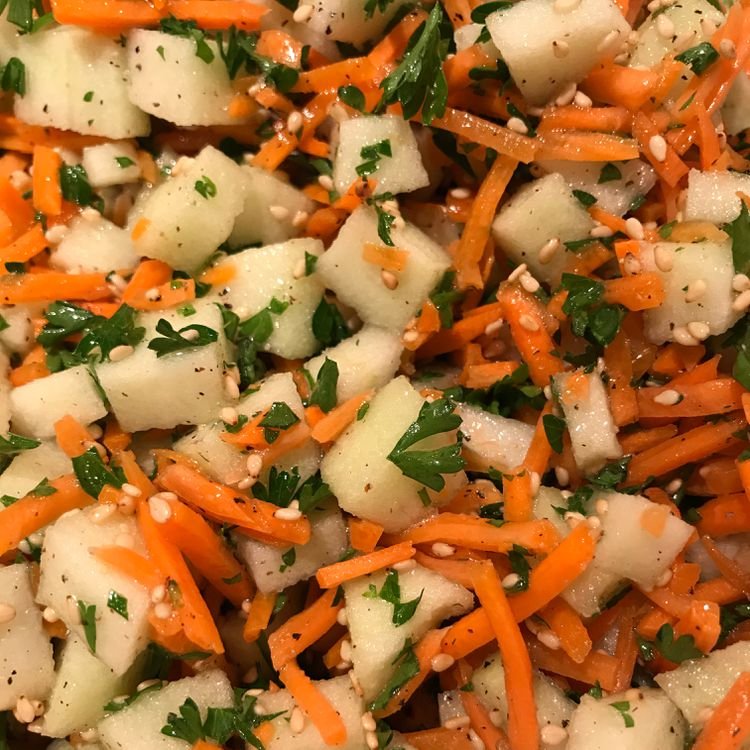

Shredded Apple Carrot Salad
Home

Description:
Ingredients
- 2 tablespoons sesame seeds
- 2 cups shredded carrots
- 1 Granny Smith apple, cored and shredded
- 1/2 cup chopped fresh parsley
- 1/4 cup lemon juice
- 2 tablespoons apple cider vinegar
- 1 tablespoon white sugar
- 1 clove garlic, minced
- 1 teaspoon salt
- 1/2 teaspoon ground black pepper
- 2 tablespoons safflower oil
Steps
-
Heat a skillet over medium heat; pour sesame seeds into the hot skillet.
Cook, stirring often, until sesame seeds are lightly browned and fragrant,
3 to 5 minutes. Remove from heat.
-
Mix carrots, apple, toasted sesame seeds, and parsley together in a bowl.
-
Whisk lemon juice, vinegar, sugar, garlic, salt, and pepper together in a separate bowl;
slowly drizzle safflower oil into lemon juice mixture while continuing to whisk.
Pour dressing over carrot mixture; toss to coat
Recipe Tip:
Substitute honey or maple syrup for the sugar is desired.